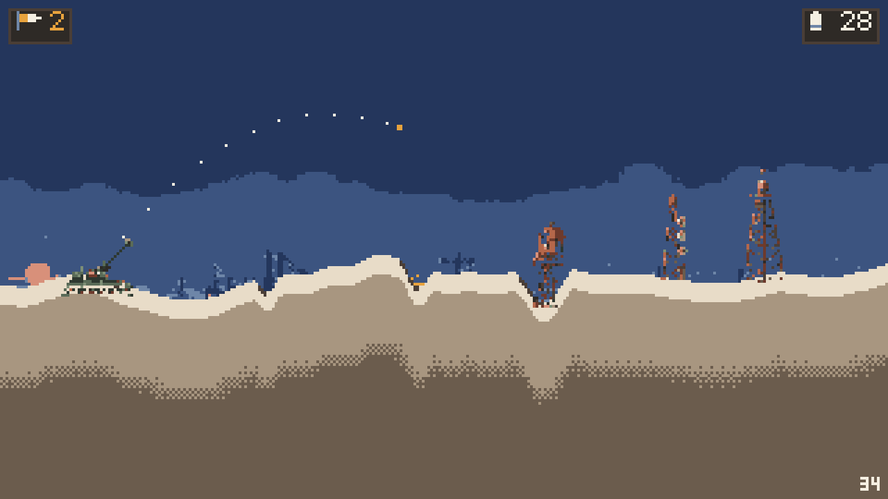

Our game, in development
Salt Line
An artillery roguelike where every shot leaves its mark.
Aim through the wind, bring the structures down, and push on along an endless procedural horizon. The ground you break stays broken, every shell you fire comes out of the run, and every four screens you draft a modifier.
With a free demo, the shareware edition: full runs, capped at 12 screens.

- Endless horizonProcedural screens, one after another, for as long as the shells last.
- Terrain that remembersCraters and wreckage stay where they fell.
- Shells are the runAmmunition is the resource. Spend it well.
- A draft every four screensPick a modifier and change how the next stretch plays.
- Versus and a map editorDuel a friend on one device, or the AI on a map you made.
- Proven before you playA deterministic Rust simulation under Godot, and every level proven solvable.
Our app
Shoutkit
One internet radio app for iPhone and Android. Free, open source and private, with no ads and no tracking.
Also made here
More projects
- An untitled racer, in development An early prototype of a retro pseudo-3D roguelike racer, where every track is proven drivable by a bot before you see it. Game · prototype
- Bauhaus Daily generated art: public-domain museum landscapes restyled with neural style transfer and served from a Cloudflare Worker. Art · source
- Podr An open-source podcast player for the web: search, keep favourites and listen in the browser. Web app
- lazydeck A lazydocker-style terminal UI for managing a fleet of Steam Deck and Steam Machine devkits. Open source · Go
- godot-device-power A Godot 4 addon that picks a frame cap and refresh rate from the power source, battery saver, thermal state and Android game mode. Open source · Godot
- godot-xdg-portals Sandbox-safe XDG Desktop Portal access for Godot games on Linux and in Flatpak: GameMode, idle inhibition, power saver and notifications. Open source · Godot
Support the work
Cascadia Collections is small and independent. If something here is useful to you, sponsoring on GitHub helps keep it going.